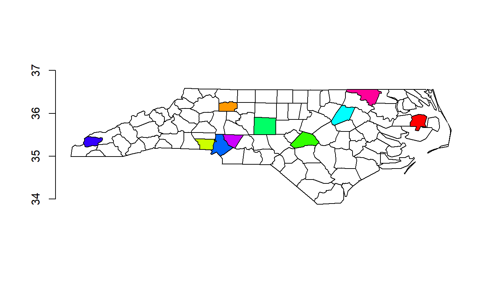

Overrides 'sf::plot.sf' and wraps the call to 'plot(st_geometry(x))'. When working with spatial data it's often useful to create maps where we overlay spatially coincident data in a plot.
# S3 method for sf plot(x, ...)
| x | sf object (the data.frame one) |
|---|---|
| ... | arguments passed to [sf::plot_sfc] |
used for its side effects of creating a plot
This can be used when developing code or checking things, so that plots aren't always faceted by all attributes, coloured by them, or leaving the plot unusable for subsequent additional drawing. The key feature is that we don't have to change our behaviour and good habits depending on the format in use.
nc <- read_sf(system.file("shape/nc.shp", package="sf")) ## all we've changed is the plot command plot(nc)## we can overplot without format-specific acrobatics plot(nc[sample(1:nrow(nc), 10), ], col = rainbow(10), add = TRUE)